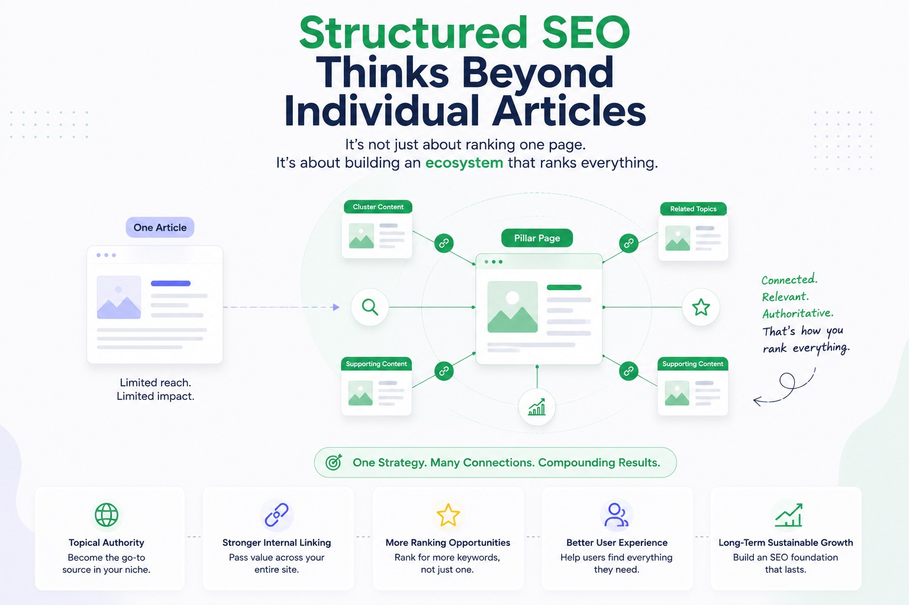

A lot of websites work hard on SEO but still struggle to grow consistently over time.
- Not because the content is terrible.
- Not because the website lacks effort.
- But because the entire SEO process feels disconnected underneath the surface.
You can usually notice it after spending a few minutes on the site. One article talks about SEO tools. Another suddenly shifts toward AI news. Then there’s a random post about affiliate marketing, followed by something completely unrelated like web hosting reviews or social media growth tips.
Individually, the articles may not even be bad. Some might actually be useful. But together, the website feels scattered. There’s no clear direction holding everything together.
Random SEO vs Structured SEO
And that’s the real difference between random SEO and structured SEO.
- One focuses on publishing content.
- The other focuses on building authority.
At first, both approaches can look similar from the outside. Both websites may publish regularly. Both may target keywords consistently. Both may even see temporary ranking improvements in the beginning.
But after enough time passes, one website usually starts compounding while the other struggles to maintain momentum.
And most of that difference comes down to structure.
Random SEO Usually Feels Productive in the Beginning
This is what makes random SEO dangerous.
It often feels like progress.
New pages are constantly being published. Impressions may slowly increase. A few articles might even rank faster than expected. Traffic appears from different directions.
Naturally, this creates excitement. Because when numbers move upward, even slightly, it feels like the strategy is working.
But movement and direction are not the same thing.
That’s the part many websites fail to understand early enough.
A lot of random SEO starts with good intentions. Someone learns keyword research, discovers low-competition opportunities, and begins writing about anything that seems capable of generating traffic quickly.
- A trending topic apprears — a new article gets published immediately.
- A competitor ranks for something interesting — another article gets added.
- A high-volume keyword shows low difficulty — content gets created without thinking much about long-term relevance.
Slowly, the website becomes reactive instead of intentional.
And eventually, the content stops supporting itself. That's where problems begin.
Search Engines Look for Clarity Across the Entire Website
Modern SEO is no longer just about individual pages ranking independently. Search engines increasingly evaluate websites as complete ecosystems.
They try understanding patterns across the entire domain.
- What topics does this website genuinely specialize in?
- How consistently does it cover those subjects?
- Do the pages connect naturally?
- Does the content demonstrate depth or just randomness?
This is why structured SEO matters so much now.
Because structure creates clarity. And clarity builds trust.
When a website consistently publishes around connected topics, search engines start understanding the site much more confidently. The website develops identity.
That identity becomes stronger over time because every new article reinforces the existing structure instead of weakening it.
For example, a website consistently publishing content around SEO, website growth, technical optimization, keyword research, content strategy, and search visibility creates a clear topical signal.
Everything supports the same ecosystem.
Not instantly. But gradually.
And SEO problems usually become dangerous when they happen gradually enough to ignore.
Random SEO vs Structured SEO
| Random SEO | Structured SEO |
|---|---|
| Focuses on publishing whatever seems easy to rank for | Focuses on building long-term topical authority |
| Content often feels disconnected | Articles naturally support each other |
| Chases short-term traffic spikes | Builds stable long-term growth |
| Internal linking becomes messy over time | Internal linking strengthens content structure |
| Website direction keeps changing | Website maintains clear identity |
| Reactive content decisions | Intentional publishing strategy |
| Creates scattered authority | Builds concentrated topical depth |
| Traffic growth becomes inconsistent | SEO momentum compounds over time |
Structured SEO Thinks Beyond Individual Articles

This is where structured SEO becomes fundamentally different from random SEO.
- Random SEO usually thinks page by page. It asks: "What should I publish today?"
- Structured SEO thinks system by system. It asks: "What kind of website am I building long term?"
That shift changes content decisions completely. Because once the focus becomes long-term authority instead of short-term traffic spikes, publishing becomes more intentional.
- Articles begin supporting each other naturally.
- Internal linking becomes meaningful.
- Topic clusters start forming organically.
- Older pages strengthen newer pages instead of competing against them.
- And slowly, the website starts developing depth instead of just size.
A lot of websites confuse having “more content” with having “more authority.”
- But authority rarely comes from volume alone.
- It usually comes from connected depth.
That’s why smaller structured websites often outperform much larger websites filled with disconnected content.
Because strong SEO isn't just about how many pages exist. It's about how clearly the entire website reinforces its own expertise.
Random SEO Quietly Creates Long-Term Weakness
One problem with random SEO is that is constantly pulls the website in different directions.
- A new trend appears, and suddenly the website changes focus.
- Traffic drops slightly, and dozens of unrelated pages get published quickly.
- A keyword tool suggests opportunity somewhere else, so another disconnected article gets added.
Over time, the website loses cohesion. Not only for search engines. For users too.
- Someone visits expecting expertise in one area but finds random topics scattered everywhere.
- The experience feels inconsistent.
- And inconsistency weakens trust quietly. That’s something many website owners realize too late.
Because trust is one of the biggest advantages structured websites build naturally over time.
- Users understand what the website represents.
- Search engines understand what the website specializes in.
Everything becomes clearer. And clarity compounds.
Structured SEO Makes Content Stronger Over Time
One underrated advantage of structured SEO is how much easier content improvement becomes as the website grows.
Because when content is connected properly, every improvement strengthens the surrounding ecosystem too.
The Compounding Benefits:
- Updating One Article: Automatically improves related pages through internal relevance.
- Strengthening One Topic Cluster: Directly increases topical authority across the entire category.
- Optimizing Site Structure: Improves crawling, navigation, and user experience simultaneously.
Key Takeaway: Everything compounds together.
The Downside of Random SEO:
- Lacks Cohesion: Random SEO rarely creates this growth effect because the content elements are disconnected.
- Restarting From Zero: Instead of building momentum, the website keeps restarting from scratch with every unrelated topic.
- Exhausting Long-Term: Writing without a system becomes highly exhausting and inefficient over time
The Final Verdict:
- Structured SEO compounds. (Your efforts multiply)
- Random SEO scatters effort. (Your energy is wasted)
Compounding is what usually separates websites that steadily grow for years from websites constantly struggling for consistency.
Long-Term SEO Growth Depends on Structure More Than Most People Realize
Many websites focus heavily on tactics:
- Keyword tricks.
- Publishing frequency.
- Traffic hacks.
- Algorithm updates.
But long-term SEO growth usually comes from something much less exciting.
- Consistency
- Clarity
- Structure
Building System vs Just Pages
Because websites that grow steadily over time are usually building systems — not just pages.
- Mutual Support: Their content reinforces itself.
- Logical Navigation: Their categories make sense.
- Topical Depth: Their internal linking supports topical depth.
- Cohesive Experience: Their entire website feels like a unified ecosystem.
The Result: The website develops stronger authority naturally because everything moves in the same direction.
That's what many SEO strategies are missing today.
- Too much publishing.
- Not enough structure.
Final Thoughts
Random SEO can still create temporary traffic. Sometimes it even creates quick wins in the beginning.
But long-term growth usually requires more than constant publishing. It requires a clear direction.
- Direction creates structure.
- Structure creates clarity.
- And clarity builds long-term trust with both users and search engines.
Building Focused Ecosystems
The websites that consistently grow over time are usually not chasing every trending keyword or publishing disconnected content constantly.
They are building focused ecosystems by:
- Strengthening topical depth.
- Improving internal linking.
- Becoming easier to understand with every piece of content they publish.
The Ultimate Difference
That's the real difference between random SEO and structured SEO:
- One creates pages.
- The other builds authority.